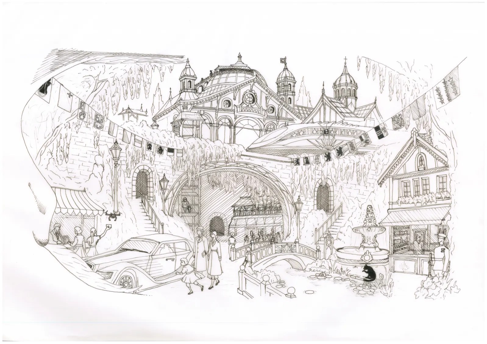
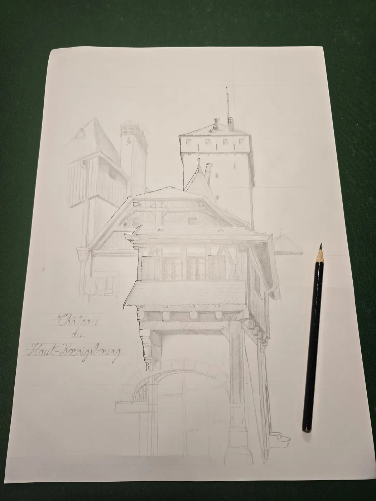
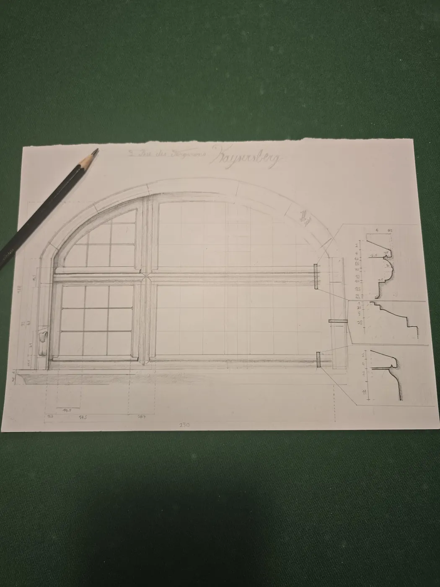
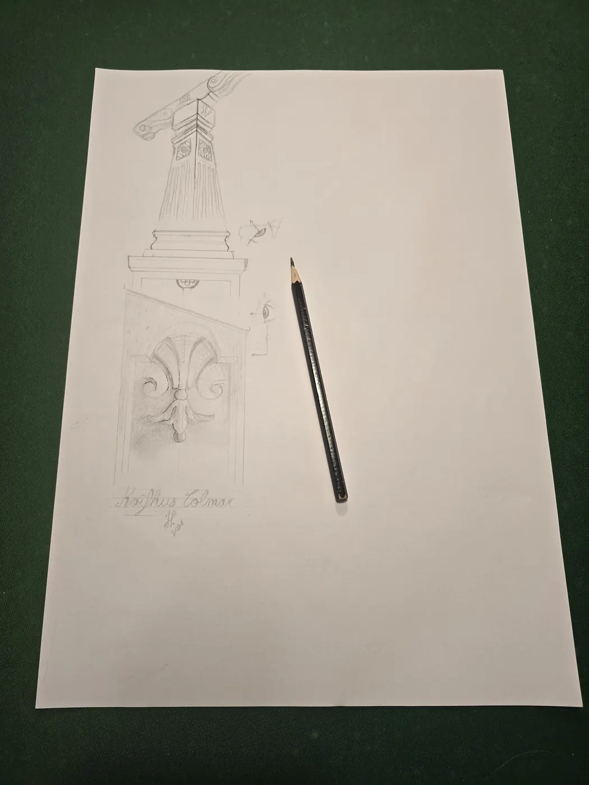
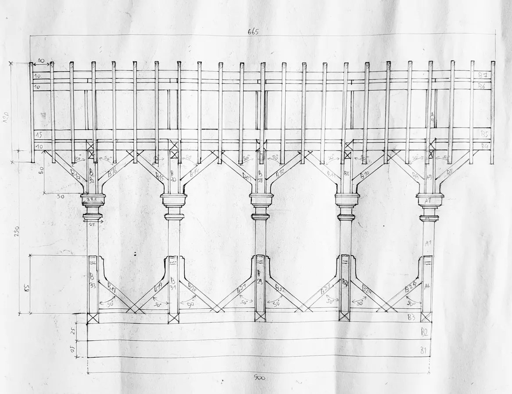

Gallieni
Étude historique - documentation, analyse, synthèse.
Historical study - documentation, analysis, synthesis.
Historische Studie - Dokumentation, Analyse, Synthese.
Assistant d’architecte · Studios Arcas, Paris · depuis le 5 nov. 2026
Architectural assistant · Studios Arcas, Paris · since 5 Nov 2026
Architekturassistent · Studios Arcas, Paris · seit 5. Nov. 2026
MPhil éthique · MBA foresight · B.S./B.A. neurosciences, biologie, anthropologie
MPhil ethics · MBA foresight · B.S./B.A. neuroscience, biology, anthropology
MPhil Ethik · MBA Foresight · B.S./B.A. Neurowissenschaft, Biologie, Anthropologie

Sous William Pesson (architecte-historien) : agence classique / Art Déco / moderniste (Knokke · Paris · Gdańsk). Livrables :
Under William Pesson (architect-historian) : classical / Art Deco / modernist office (Knokke · Paris · Gdańsk). Deliverables:
Unter William Pesson (Architekt-Historiker) : klassisch / Art déco / modernistisch (Knokke · Paris · Gdańsk). Lieferungen:
Étude historique - documentation, analyse, synthèse.
Historical study - documentation, analysis, synthesis.
Historische Studie - Dokumentation, Analyse, Synthese.
Pièces graphiques - hiérarchie du dessin d’agence.
Supporting drawings - studio drawing hierarchy.
Zeichnungen - Hierarchie der Bürozeichnung.
Recherche archivistique - sources et contexte.
Archival research - sources and context.
Archivforschung - Quellen und Kontext.

Ressortissant suisse. Parcours dense : neurosciences, biologie et anthropologie (Montana) ; MBA Foresight (Summa Cum Laude) ; MPhil Applied Ethics (thèse BIOCRACY, DiVA) ; diplôme alpage ; kood/Jõhvi Full Stack / IA. Aujourd’hui chez Studios Arcas Paris (William Pesson) : recherche historique, élévations, archives. Dessin mesuré et vernaculaire à colombage (Table Ronde, Alsace). Candidature architecture / patrimoine / assistance en Suisse.
Swiss national. Dense credential stack: neuroscience, biology and anthropology (Montana); MBA Foresight (Summa Cum Laude); MPhil Applied Ethics (thesis BIOCRACY, DiVA); alpine pasturing diploma; kood/Jõhvi Full Stack / AI. Now at Studios Arcas Paris (William Pesson): historical research, elevations, archives. Measured drawing and half-timbered vernacular (Table Ronde, Alsace). Targeting architecture / heritage / assistant roles in Switzerland.
Schweizer Staatsangehöriger. Dichtes Profil: Neurowissenschaft, Biologie und Anthropologie (Montana); MBA Foresight (Summa Cum Laude); MPhil Applied Ethics (These BIOCRACY, DiVA); Alpwirtschaft-Diplom; kood/Jõhvi Full Stack / KI. Heute bei Studios Arcas Paris (William Pesson): historische Recherche, Aufrisse, Archive. Aufmasszeichnung und Fachwerk-Vernakular (Table Ronde, Elsass). Ziel: Architektur / Denkmalpflege / Assistenz in der Schweiz.
Direction de production, foresight, stratégie : même exigence qu’un bâtiment - ce que l’environnement fait à l’humain.
Production leadership, foresight, strategy : the same demand as a building - what the environment does to the human.
Produktionsleitung, Foresight, Strategie : dieselbe Anforderung wie ein Bauwerk - was die Umgebung dem Menschen antut.
Lead Game Designer - RPG, mécanique, UX, worldbuilding (Steam).
Lead Game Designer - RPG, systems, UX, worldbuilding (Steam).
Lead Game Designer - RPG, Systeme, UX, Worldbuilding (Steam).
oncelostgames.comCreative Director · Archopoia - fiction philosophique, monde, équipe.
Creative Director · Archopoia - philosophical fiction, world, team.
Creative Director · Archopoia - philosophische Fiction, Welt, Team.
thediscordingtales.comChap. 3 - Moral Conflicts, Hindrances & Benefits… (Routledge).
Ch. 3 - Moral Conflicts, Hindrances & Benefits… (Routledge).
Kap. 3 - Moral Conflicts, Hindrances & Benefits… (Routledge).
routledge.com · buyProduct / game design & management - Lausanne.
Product / game design & management - Lausanne.
Product / Game Design & Management - Lausanne.
psychostrategie.chFull Stack Software Development, AI Specialization - Estonie.
Full Stack Software Development, AI Specialization - Estonia.
Full Stack Software Development, AI Specialization - Estland.
kood.tech/jõhviLa Table Ronde de l’Architecture · Alsace · Nadia & Noé Morin






INTBAU · Dirk Mortier · Ideal Spaces
Agrilogie Grange-Verney · Moudon, Suisse
Agrilogie Grange-Verney · Moudon, Switzerland
Agrilogie Grange-Verney · Moudon, Schweiz
Encre, A3 - vernaculaire suisse. Ideal Spaces · Loss of Cultural Heritage, sept. 2026.
Ink, A3 - Swiss vernacular. Ideal Spaces · Loss of Cultural Heritage, Sep 2026.
Tusche, A3 - schweizerische Vernakular. Ideal Spaces · Loss of Cultural Heritage, Sept. 2026.
Premier design mesuré, à la main - atelier Dirk Mortier.
First measured design, hand-drawn - Dirk Mortier workshop.
Erster Aufmass-Entwurf, Handzeichnung - Workshop Dirk Mortier.

Portée, membres, chemin de charge.
Span, members, load path.
Spannweite, Stäbe, Lastpfad.
Architecture as a Cognitive and Selective Niche: Toward an Evolutionary Architectonics
Architecture as a Cognitive and Selective Niche: Toward an Evolutionary Architectonics
Architecture as a Cognitive and Selective Niche: Toward an Evolutionary Architectonics
Cadre interdisciplinaire (biologie évolutive, anthropologie, archéologie, sciences cognitives, neurosciences, théorie architecturale) : les configurations architecturales organisent des demandes perceptives, cognitives et comportementales récurrentes - perception spatiale, attention, mémoire, navigation, coordination corporelle, interaction sociale. L’environnement construit n’exprime pas seulement les capacités humaines : il participe à leur développement, leur maintien et, potentiellement, leur transformation. Article en cours avec Sergei Gepshtein et Tiziana Proietti.
Interdisciplinary framework (evolutionary biology, anthropology, archaeology, cognitive science, neuroscience, architectural theory): architectural configurations organise recurrent perceptual, cognitive and behavioural demands - spatial perception, attention, memory, navigation, bodily coordination, social interaction. Built environments are not only expressions of human capacities; they are active components of the environments through which those capacities are developed, maintained, and potentially transformed. Article in progress with Sergei Gepshtein and Tiziana Proietti.
Interdisziplinärer Rahmen (Evolutionsbiologie, Anthropologie, Archäologie, Kognitionswissenschaft, Neurowissenschaft, Architekturtheorie): architektonische Konfigurationen organisieren wiederkehrende perzeptive, kognitive und verhaltenbezogene Anforderungen - Raumwahrnehmung, Aufmerksamkeit, Gedächtnis, Navigation, körperliche Koordination, soziale Interaktion. Gebaute Umwelten sind nicht nur Ausdruck menschlicher Kapazitäten; sie sind aktive Bestandteile der Umwelten, in denen diese entwickelt, erhalten und potenziell transformiert werden. Artikel in Arbeit mit Sergei Gepshtein und Tiziana Proietti.
Chaîne : architecture → perception → comportement → interaction répétée → développement et sélection. Prolongement de BIOCRACY : l’architecture comme environnement sélectif plus lent que la technique.
Chain: architecture → perception → behaviour → repeated interaction → development and selection. Extends BIOCRACY: architecture as a slower selective environment than technology.
Kette: Architektur → Wahrnehmung → Verhalten → wiederholte Interaktion → Entwicklung und Selektion. Fortsetzung von BIOCRACY: Architektur als langsamere selektive Umwelt als Technik.
Studios Arcas Paris · Table Ronde · INTBAU · 2025-
Linköping · 2023-2025 · thèse BIOCRACY · DiVA
Linköping · 2023-2025 · thesis BIOCRACY · DiVA
Linköping · 2023-2025 · These BIOCRACY · DiVA
KSU Vilnius · 9.73/10 · Summa Cum Laude · thèse 10/10 : Evaluation of morality as a factor of creativity in foresight
Towards Principles for Responsible Futures · ch. 3 Moral Conflicts…
University of Montana · 2015-2019
kood/Jõhvi · MTÜ Tuleviku Tehnoloogiaharidus · mai 2024-mars 2026
kood/Jõhvi · MTÜ Tuleviku Tehnoloogiaharidus · May 2024-March 2026
kood/Jõhvi · MTÜ Tuleviku Tehnoloogiaharidus · Mai 2024-März 2026
Agrilogie Grange-Verney · Moudon · mai-août 2020
Agrilogie Grange-Verney · Moudon · May-Aug 2020
Agrilogie Grange-Verney · Moudon · Mai-Aug. 2020
Architecture
Tools
Un échange court suffit - je m’adapte à vos outils.
A short conversation is enough - I’ll adapt to your tools.
Ein kurzes Gespräch reicht - ich passe auf Ihre Tools.